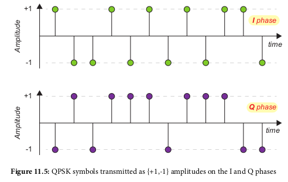
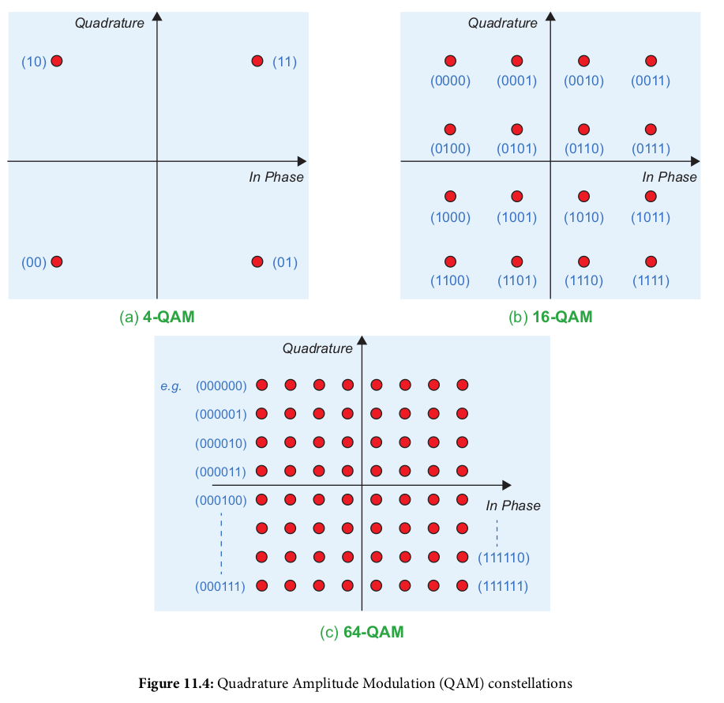
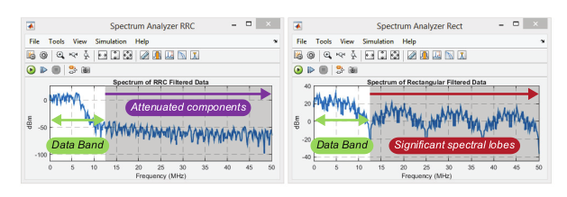
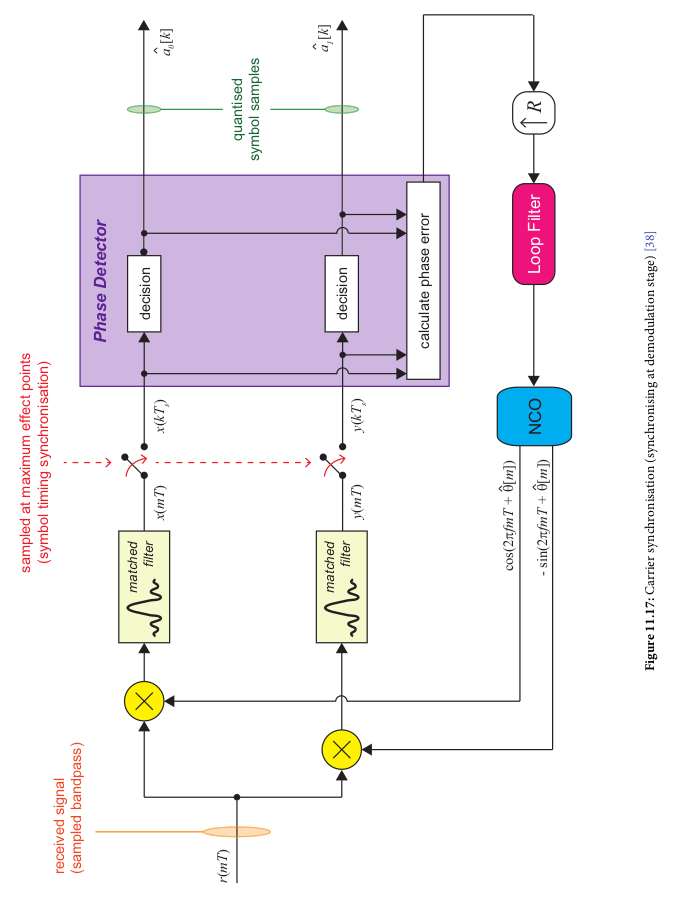
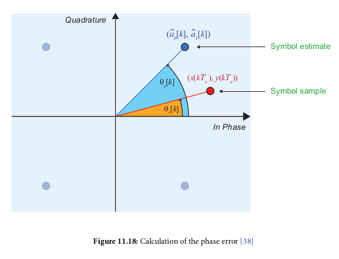
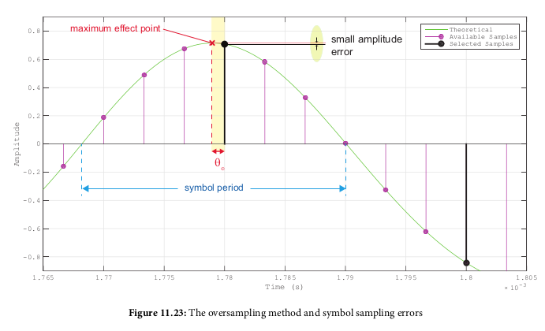
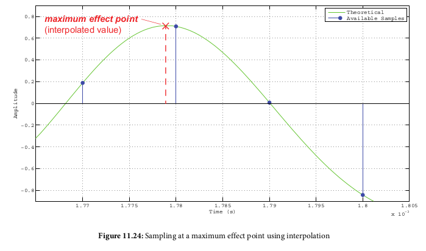
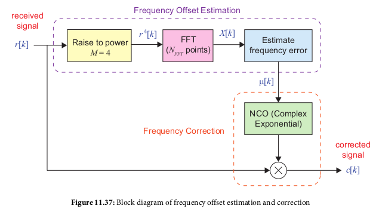
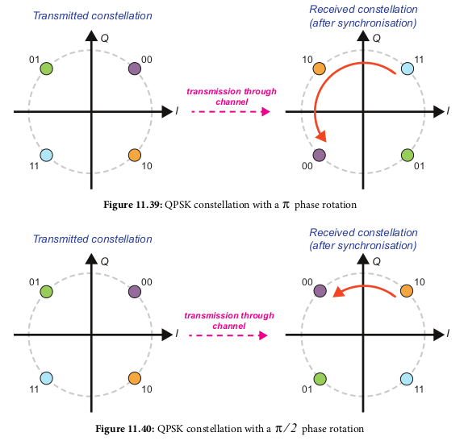

Digital Phase Modulation Schemes
- Binary Phase Shift Keying (BPSK): 1 bit per symbol
- Quaternary Phase Shift Keying (QPSK): 2 bits per symbol
- 8-Phase Shift Keying (8PSK): 3 bits per symbol
- 
Digital Amplitude Modulation Schemes
- 4-position Quadrature Amplitude Modulation (4-QAM): 2 bits per symbol
- 16-position Quadrature Amplitude Modulation (16-QAM): 4 bits per symbol
- 64-position Quadrature Amplitude Modulation (64-QAM): 6 bits per symbol
- 
Decision Boundaries
Pulse Shaping
- Purpose: limit the bandwidth of the transmission
- Happens after bit-to symbol mapping above
- Have to avoid introducing inter-symbol-interference (ISI)
- Popular implementation: raised cosine filter (RC)
- One-half implemented on transmitter end, other half implemented
on receive end
- Each half is a root-raised cosine filter (RRC) filter
- When combined, the RRC filters provide zero-ISI
- 
Digital Upconversion and Downconversion
- Modulates and Demodulates a signal
- Additionally moves between the symbol rate f_symbol and the DAC or ADC
sampling rate f_system
- Digital Upconverter (DUC): transmitter, f_symbol -> f_system through filtering
- Digital Downconverter (DDC): receiver, f_system -> f_symbol
- Multirate R_multirate = f_system/f_symbol
Carrier Synchronization
- On receive side, need to account for phase and frequency offset
errors
- Phase error calculation:
- Decision Directed: transmitted data symbols unknown, phase error
is generated based on symbol decision (closest symbol to received
sample)
- Generally use this method
- Possible that there is still phase rotation (e.g., a multiple
of 90 degrees)
- Data aided: receiver knows transmitted symbols, derives phase
error based on that
- 
- 
Timing correction
- Goal to sample at an interval at the proper time to get the max
signal amplitude
- Done using a timeing error detector (TED)
- Two methods: oversampling and interpolation
- oversampling: sample at rate much higher than symbol rate, then
select the samples closest to the maximum effect points
- 
- Interpolation: oversample at small amount (e.g. 2x symbol rate)
and interpolate between samples
- 
- TED produces early and late signals, then subtracts between them
to get a 'punctual' (on time) sample time
- Combined timing and carrier synchronization looks like:
- Should make I and Q amplitudes converge:
Coarse Frequency Syncronization
- Calculates an initial frequency offset, for a large value (happens
before fine frequency sync)
- Uses FFT on input, raised to 4th power, then selecting FFT bin
with highest magnitude as the desired signal
- 
PSK phase ambiguity
- Once you have a proper PSK (e.g. BPSK or QPSK) signal plot,
there is a chance the phase is incorrect, e.g. rotated to
the wrong constellation points. This means your resulting bits
will be incorrect since they are derived from the wrong
constellation point
- 
- Two ways to handle this: differential encoding or unique word
transmission
Differential Encoding
- Encodes input bits so that they can be recovered after incorrect
receive due to PSK phase offset
- For BPSK, you use the current bit and previous encoded bit (Default 0)
and XNOR them:
- To decode, you do the same thing except your previous bit to use
is BEFORE decoding
- If the phase is incorrect on the received symbols, then the first
decoded bit will be incorrect, but the rest will be correct
- QPSK encoding and decoding is similar, except you use the last 2 bits
instead of just the last bits, and the output of encoding/decoding
is two bits instead of 1 bit
Unique Word Synchronization
- You transmit a fixed/known bit sequence before your actual payload.
On the receive end, we look for that sequence, and if it's not found,
check the resulting sequence if we rotate the phase/bit mapping
ourselves. Once we find the phase mapping that results in the
correct sequence, we apply said phase mappnig to the rest of the
input as well
- For BSPK this looks like:
- For QPSK this looks like: